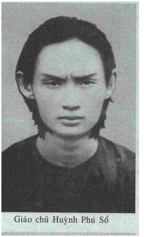

Được đẩy lên đỉnh quyền hành ở Đông Dương, Toàn Quyền Đô Đốc Decoux liền loại khỏi bộ máy thống trị hàng trăm viên chức theo Hội Tam Điểm (francs-maçons), ‘’những tên Do Thái và những kẻ có đầu óc tồi tệ’’, đày khổ sai những ‘’kẻ lầm lạc mà người ta gọi là phái De Gaulle’’, không kiêng nể gì những người Pháp đảng viên đảng xã hội, những chiến sĩ nghiệp đoàn, những kẻ đã ‘’công khai rao giảng về quyền bình đẳng giữa các chủng tộc cùng về điều kiện xã hội ai cũng như ai’’. Người bản địa, hoặc cộng sản (xu hướng Trotskij hoặc Stalin) hoặc quốc gia không hối cải, họ trải qua một cuộc truy lùng dữ dội không thua hồi mới tuyên bố chiến tranh ở Châu Âu.
Chính quyền Decoux lập ra những ‘’Binh đoàn chinh chiến’’ với nhiệm vụ là ‘’cộng tác với chính quyền’’. Đội quân này chẳng bao lâu đã mộ được khoảng 6000 tên thực dân ù ù cạc cạc mà người ta thường thấy chúng tự tán dương cuồn nhiệt trong những cuộc tập hợp khổng lồ, với những tiếng họ ‘’Thưa Thống Chế! Chúng tôi có mặt đây!’’, xung quanh những tấm chân dung Thống Chế Pétain đồ sộ trên nền cờ tam tài cùng những dòng chữ lớn:
Một thủ lĩnh duy nhất: Pétain
Một nhiệm vụ duy nhất: Phục tùng
Một phương châm duy nhất: Phụng sự

Đối với bọn đó thì ‘’dân bản địa, theo định nghĩa, phải căn cơ trong địa vịthấp hèn, và tiếp tục chịu đựng mọi sưu dịch vô lượng, để nguời Âu đượcthỏa mãn nhu cầu, tiện nghi và mức sống ngày càng cao của họ’’ (146). Decoux hyvọng ở xứÁ Châu này làm biểu dương ‘’lực lượng của chúng ta, của 40.000người Pháp, đối diện 25 triệu dân Đông Dương đang dòm ngó chúng ta’’,mặc dù họ (6000 tên thực dân trong Binh Đoàn) còn thô kệch đến đâu đi nữa,họ cũng phục vụ ‘’lợi quyền của các chủng tộc da trắng’’. (147)
Ngày 22 tháng 9 năm 1940, quân Nhật ở Quảng Châu bất ngờ tấn công đơn vị quân Pháp ở Lạng Sơn phải tháo chạy. Rồi sau cuộc đổ bộ lên HảiPhòng, quân Nhật chiếm đóng Bắc Kỳ. Ngày 26 tháng 7 năm 1941, chínhphủ Vichy mở hải cảng Cam Ranh và Sài Gòn cho quân Nhật. Ngày 29, thỏa hiệp‘’phòng thủ chung’’ mở toan cửa Đông Dương cho quân Nhật âmthầm tràn vào.
Chính quyền thực dân vẫn tồn tại và Toàn QuyềnDecoux tuyên thệ‘’bảo đảm an toàn hậu phương cho quân đội Nhật cùng trật tự trong nội bộ‘’Đông Dương’’ (148). Từ đấy xứ nầy trở thành cơ sở để cho quân Nhật dichuyển tiến về phía Xiêm, Miến Điện và Mã Lai. Đông Dương cam kếtcung cấp cho Nhật gạo, ngô, than, cao su, quặng mỏ...Để đổi lấy hàng dệtvà những sản vật kỹ nghệ khác.
Phò trợ quân chiếm đóng mới tới, Decoux sung công dân thợ kiến trúc các công trình chiến lược (đường sắt, trại lính, sân bay), bắt buộc trồng tỉa các nông sản nguyên liệu kỹ nghệ, làm băng hoạinông sản lương thực. Decoux phụng sự quân đội Nhật, thiết lập độc quyền thu gom ngũ cốc (nhất là lúathóc), cao su, bông, đay, chất béo, v.v...Ngoài ra còn tấp nập chu cấp quân đội Nhật vô số tiến bạc..
Nạn lạm phát, túng thiếu, tiết chế, chợ đen, đầu cơ, bổ mạnh vào đầu những người nghèo. Lương thực cùng tận ở Bắc Kỳ sau những trận giông bão tàn phá và vỡ đê. Từ cuối năm 1943, Mỹ dội bom oanh tạc đường sắt xuyên Đông Dương ngăn trở việc vận chuyển gạo từ Nam Kỳ ra Bắc Kỳ.
Phải nghĩ sao về cách Đô ĐốcDecoux‘’bảo hộ’’ xứ này, trong khi nạn đói đã giết chết từ một đến hai triệu người Bắc Kỳ, mà hắn vẫn cứ tích trữ lúa thóc chứa đầy kho, như sau này hắn viết:
Trong lúc Nhật đảo chính, ngày 9 tháng 3 năm 1945, nhiều kho trữngũ cốc và lương thực lớn đã được thành lập để dự trù việc tái xuấtkhẩu sang chính quốc và đưa tới các thị trường lớn trên thế giới.
Chủ yếu tôi nêu con số: Khoảng 500 ngàn tonô thóc. (mỗi tonô độ 70 giạ). (149)
Đời sống thợ thuyền và dân cày
Cuộc đấu tranh của tầng lớp phu phen, thợ thuyền trở thành một cuộc đấu tranh đểtồn tại, dành lấy chén cơm hàng ngày, và đòi hỏi những thứ vậtdụng cần thiết vắng bóng trên thị trường như vải vóc, gạo, diêm, xà phòng.
Theo thống kê chính thức, ở Bắc Kỳ vào năm 1943-1944 nổ lên 18 cuộc bãi công (các nhà in, ngân hàng Đông Dương, nhà máy sợi Nam Định, trạm hàng không Gia Lâm sau vụ bọn Nhật giết một người đàn bà An Namlàm công ở đó). Thêm vào các cuộc đình công đòi khi còn có những vụphản đối vô vọng của hàng ngàn dân làng, khi bà con tráng đinh của họ bịsung công, chẳng hạn như ở Thanh Hóa vào tháng 11 năm 1943. Tại Nam Kỳ, có 24 cuộc bãi công từ tháng 5.1942 đến tháng 6.1943, chủ yếu tại các đồn điền cao su ở Biên Hòa. Cũng có những phong trào tương tự xảy ratrong các sản nghiệp người Nhật, các xưởng may quần áo và đóng giầy choquân đội, các công trường trại lính. Tại bến cảng Sài Gòn, người ta bạo dạndám phản đối chống lính Nhật bạo tàn. Ở đồn điền Long Thành, 500 phubãi công sau khi một anh bị một giám thị người Pháp giết vào tháng 10năm 1943.
Sau cuộc nông dân bạo động võ trang năm 1940 bị đánh bại, phong trào chính trị công nông suy đồi thực sự. Niềm hy vọng cách mạng dường nhưdập tắt vì
Bầu trời thấp nặng đè như vung úp
Mặt đất chuyển thành một ẩm thấp hầm sâu.
Hai tầng chiếm đóng kéo theo hai tầng bóc lột khốc liệt!
Các thủ đoạn Pháp và Nhật
Hai tầng bóc lột kèm theo hai lớp dụ hoặc dân bản địa.
Toàn QuyềnDecoux thực hiện chính sách đối xử trọng hậu các vua chúa từlâu dưới quyền bảo hộ (Vua Miên, Vua Lào và Vua An Nam); để được lòngcác giai cấp hữu sản - sau khi giải tán các hội đồng do tuyển cử bầu ra, -thành lập một Hội đồng tư vấn liên bang, gồm 25 ủy viên người bản địa, ‘’lựa chọn những kẻ trung thành với nước Pháp’’. Đồng thời y đưa ‘’giớithượng lưu bản địa tham gia chức vụ quản lý và điều hành, kể cả có thẩmquyền’’, với thái độ đối xử bình đẳng cùng công chức người Pháp, (một yêu sách đưa ra từ 1925). Đối với làng bút sĩ văn hào, Decoux ban hành chínhsách tự do in ấn bằng chữ Quốc Ngữ, từ đó báo chí sôi động tương đối, kiểmsoát bên trong. Đối với thanh niên học sinh, huy động Phong Trào Giáo Dục, Thanh Niên và Thể Thao, lập trường học, trại gặp gỡ, tổ chức các cuộc chạy đua quy mô đẹp mắt, các cuộc đồng phục tuần hành, tất cả đều núpdưới bóng tôn thờ ngài ‘’Thống Chếtôn sùng’’, dưới phương châm ‘’phụctùng và phụng sự’’.
Một vài tờ báo định kỳ dè dặt xuất hiện nhưng không bị truy tố.
Năm 1940, hai Bác Sĩ Phạm ngọc Thạch và Hồ Tá Khanh tung ra tờtuần báo Văn Lang ở Sài Gòn (tờ báo mang cái tên tiền sử mảnh đất ngườiViệt), nội dung có bài thuyết minh lịch sử đất nước theo lối chủ nghĩa duyvật sử quan, có bài trần thuật khái niệm về phòng bệnh nhiệt đới.
Ở Hà Nội năm 1941, các nhà trí thức Nguyễn Văn Tố và Đào Duy Anh cho ra đời một tạp chí nghiên cứu, không tồn tại được lâu, lấy tên là Tri Tân,đặt dưới danh nghĩa Khổng Tử: Ôn cố nhi tri tân. Nhóm Hàn Thuyên, doTrương Tửu nhà văn cảm tình với Trotskij chủ động, xuất bản tờ Văn Mới vàtờ Văn Mới Tuổi Trẻ, xuất bản một số sách phổ biến tư tưởng Karl Marx và mộttập sách minh giải Truyện Kiều theo hướng phê phán và duy vật.
Vào tháng 5 năm 1943, sau những trận Nhật bại chiến ở Thái Bình Dương, Đức thất thế ở Stalingrad, tuần báo Thanh Nghị mạnh dạn đếnmức dám nêu lên một vài câu hỏi chính trị về tương lai xứ sở sắp tới. Vàotháng tám, ở Sài Gòn, báo Thanh Niên của Huỳnh tấn Phát, Kiến Trúc Sư,kích động ‘’một sự canh tân dân tộc, một ý thức dân tộc’’, soi sáng lựclượng dân chúng, dìu dẫn họ tham gia ‘’tạo cho xứ sở bước trên chặngđường mới của lịch sử dân tộc’’, thống nhất 3 Kỳ thành một quốc gia tựdo. Tờ báo nhấn mạnh sự cần thiết phải tiếp thu những kỹ thuật của Thế Kỷ XX và đối chiếu giữa chế độ nghị viện và chế độ độc tài, trên quan điểmnhằm lựa chọn một chế độ chính trị cho một xứ Đông Dương đã giảiphóng.
Một thứ ‘’chủ nghĩa yêu nước’’ chuyển hóa thành một chủ nghĩa quốc gia công khai, Decoux không thể dung túng. Báo Thanh Niên bị đình bản vàogiữa năm 1944.
Phía người Nhật, họ toan dụ hoặc dân tình bằng hứa hẹn với các dân tộc bị thực dân áp bức ở Á Châu, rằng sẽ giúp họ thoát ách nô lệ người Âu.Đồng thời Nhật bảo trợ thực tế các giáo phái chính trị ít nhiều xu hướng đòiphục hồi lãnh thổ nước nhà, cùng che chở các nhóm lẻ tẻ theo chủ nghĩaquốc gia xuất hiện từ năm 1940.
Một khi đã được giải phóng, Đông Dương sẽ gia nhập ‘’khối cộng đồng thịnh vượng kinh tế Đại Đông Á’’; người Nhật tiến hành tuyên truyềnthuyết huyền ảo ấy bằng vô tuyến truyền thanh, chiếu bóng, xuất bản nhiều tạp chí Quốc Ngữ như tờ Tân Á, bày bố triển lãm phô diễn những chiếnthắng đầu tiên của họ ở Thái Bình Dương, tổ chức những lớp học tiếngNhật. Khi viên Tướng Nhật Matsui đã về hưu ghé qua Sài Gòn hồi tháng 7 năm 1943, y long trọng tuyên bố Nhật Bản sẽ giải phóng các nước Châu Á,bất kể ý chí Mỹ, Anh, Pháp.
Hiến binh Nhật (Kempeitai) đặt chân lên Đông Dương sau trận Trân Châu Cảng (Pearl Harbour, 8 tháng chạp 1941). Tổ chức cảnh sát quân sựNhật hoạt động song song với lực lượng mật thám Pháp. Lực lượng hiến binh bảo trợ các nhóm lẻ tẻ gồm những kẻ âm mưu hy vọng dựa vào thế lực của Nhật đểgiải phóng xứ sở: Ở miền Nam có Đảng Cách MạngViệt Nam Thống Nhất, một chi nhánh Đảng Việt Nam Phục Quốc; ở phía Bắc, Đảng Đại Việt do Nhà Văn Nguyễn Tường Tam (bút danh Nhất Linh) thànhlập, lại xuất hiện Đại Việt Quốc Xã và Việt Nam Ái Quốc Đoàn. Hiến BinhNhật hữu hiệu can thiệp ngăn ngừa Pháp động chặn bắt bớ các nhóm đảngphái này.
Giáo phái chính trị Cao Đài
Xuất hiện tại Nam Kỳ năm 1925-1926, Giáo Phái Cao Đài (150) là một sản phẩm của một số nhà tư sản Nam Kỳ, không chịu phụ thuộc bộ máy thực dân, toan tạo nên một lĩnh vực siêu nhiên trong đó họ sẽ chiếm ưu thế và sẽ khôi phục lại nền luân lý, đã lỗi thời của ba tôn giáo chính ở Việt Nam làĐạo Phật, Đạo Tiên và Đạo Nhân (Đạo Nho). Giáo phái nầy sẽ phục hưng các tôn giáo truyền thống tạo thành một đạo duy nhất đặt tên là Đạo CaoĐài, lấy tên của đấng tối cao: Cao Đài.
Thêm vào ba ngành tôn giáo trên, Đạo Cao Đài còn gia nhập Đạo Thiên Chúa (Thánh) và Đạo thờ quỷ thần (Thần Đạo) vào Thánh Thất. Trên Điệnthờ, Chúa Giêsu, Mahomet, Brahma, các Thi Hào như Lý Thái Bạch, Victo Huygo...mỗi vị ngôi thứ khác nhau:
Người sáng lập ‘’tôn giáo mới’’ này là viên cựu Hội Đồng Quản Hạt Lê Văn Trung, trước kia làm tư vấn riêng Văn Phòng Thống Đốc Cognacq. Ông ta nghiễm nhiên nhập phái duy linh thần bí. Hai mươi sáu người cùng ký tênvào bản tuyên bố thành lập Đạo Cao Đài, bao gồm một số viên chức cao cấpngười An Nam, các đốc phủ, quan phủ, quan huyện, các điền chủ và một sốnhân vật thuộc giới trung lưu, tiểu viên chức, nhân viên thương mại, giáoviên, hiệu trưởng, chánh tổng, hào lý. Sau này, có thêm một số y sĩ, dược sĩ,giáo sư có mặt trong ban chức sắc của giáo phái này.
Đạo Cao Đài tổ chức mô hình bộ máy hành chính thuộc địa và đẳng cấp Thiên Chúa (với một Thánh Thất), nhanh chóng mộ được một số dânnông thôn, nhiều đại điền chủ và lý hào. Lãnh tụ lập hiến (Nguyễn PhanLong...),đảng viên quốc gia (Lê Thế Vinh), hội viên cũ các hội kín (TưMắt), tấp nập gia nhập đạo, hy vọng tạo cơ sở chính trị ngay bên trong,nhằm thu phục các tầng lớp dân cày trước kia phần thì dính dáng Phong Trào Nguyễn An Ninh, lớp thì có chân trong đảng Thanh Niên của Nguyễn ái Quốc rồi từ năm 1930 gia nhập đảng cộng sản. Số người kể trên gianhập tô điểm cộng đồng giáo phái này một mầu sắc chính trị, nội bộ lungtung xu hướng trái ngược nhau.
Mặc dù xung đột trong nội bộ, Đạo Cao Đàitiếp thu được gần 35 vạn tín đồ vào khoảng năm 1932.
Nông dân nhập đạođông đảo như thế có lẽ một vì giáo lýtôn giáo nầy hỗn dung một chiều cùng những niềm tin cổ xưa, và hai là vì tình cảnh dâncày phụ thuộc địa chủ và hào lý nông thôn cả về mặt xã hội và kinh tế.
Chiến tranh ở Châu Âu, trong Đạo Cao Đài họ minh giải sự thất bại của Pháp qua những bài thơ lai láng cảm tình, những thông điệp thần linh cùngsấm ngữ tiên tri rao truyền chế độ áp bức thực dân Pháp sắp tận theo số trờithiên văn đã định.
Quy pháp mà các tín đồtiếp thu, tương theo Đạo Khổng ‘’Tam cương’’, quân thần, phụ tử, phụ phu và ‘’ngũ thường’’: Nhân, nghĩa, lễ, trí, tín.Đạo quy‘’ngũ giới cấm lấy ở Phật Giáo: Cấm sát hại sinh linh, không tham lam,không xa hoa, cấm ác khẩu, cấm ăn thịt và uống rượu. Ngoài ra đạo quy còncó bốn đạo lệnh: Phục tùng cấp trên và thú nhận lỗi lầm, làm điều thiện kể cả đối với kẻ thù mà không được cao ngạo; thái độ sòng phẳng đối với kẻkhác và đối xử ngay thẳng đối với mọi người.
Sau hết, đạo quy còn dự định trừng phạt những ai vi phạm, mức cùng là khai trừ, và nếu tín đồ thuộc hàng chức sắc thì sẽ báo cáo với chính quyềnthực dân. Thế là một Nhà nước nhỏ đã thiết lập trong lòng Nhà nước thuộcđịa. Năm 1933, chủ tỉnh Tây Ninh Vilmont báo cáo: Tín đồ Cao Đàikhuynh hướng xem mình là một nhà nước độc lập.
Tháng 8 năm 1940 Đô ĐốcDecoux, Toàn Quyền Đông Dương, hạ lệnh đóng cửa Tòa Thánh Tây Ninh, khoảng mười lăm thánh đường nhỏ ở cáctỉnh và các ‘’nhà từ thiện’’. Qua tháng 7 năm 1941, Hộ Pháp Phạm CôngTắc và sáu giáo chức cao cấp bị đày đi Đảo Madagascar. Tháng 9, quân độiPháp chiếm đóng Thánh Thất Tây Ninh.
Năm 1943 tháng 7, cảnh sát đặc nhiệm bắt một số tín đồ Cao Đài hăng hái nhất trong các Tỉnh Thủ Dầu Một và Bặc Liêu rồi đưa vào trại tập trung.Đồng thời, mật thám kiểm thúc đe dọa các nhóm quốc gia. Họ báo động Hiến Binh Nhật liền ra tay bảo trợ. Ngô Đình Diệm được Nhật che chở ở Huế. Trần Trọng Kim và Dương Bá Trạc ở Hà Nội cùng Trần Văn Ân vàĐặng Văn Ký ở Sài Gòn, bốn người được đưa sang tạm trú bên Singapore.
Giáo Sư Cao Đài Trần Quang Vinh (cựu Thơ Ký Sở Nghệ Thuật Cam-bốt),sau khi thánh đường của ông tại Phnôm Pênh bị đóng cửa, bèn xuống SàiGòn tái lập một ban lãnh đạo giáo phái, rồi tìm cách tập hợp tín đồ các tỉnh.
Ông gia nhập Đảng Phục Quốc do Hoàng Thân Cường Để chủ trì. Tổ chức này - sau khi sáp nhập với Đại Việt và Đại Việt Quốc Xã - trở thành Việt Nam Phục Quốc Đồng Minh Hội (gọi tắt là Phục Quốc). Với tư cách là tùyviên dân sự trong Hiến Binh Nhật, ông thấy mật thám Pháp không còn rớ đến mình được nữa.
Ơn đền nghĩa trả, Trần Quang Vinh ra tay tuyển mộ nhân công cho các công xưởng hải quân Nhật ở Vĩnh Hội (Chợ Lớn). Quân Nhật tập binh phuvà thợ làm lính chiến. Cho tới lúc đảo chính ngày 9 tháng 3 năm 1945,Nhật huấn luyện được khoảng 20.000 người có sức trở thành lực lượng hỗ trợ quân đội Nhật.
Giáo phái chính trị Hòa Hảo
Một giáo phái khác, xuất hiện năm 1939 tại miền Tây Nam Kỳ, gọi Đạo Hòa Hảo (lấy tên làng của người sáng lập) một giáo phái phát triển đặc biệt nhanh chóng. (151) Huỳnh Phú Sổ, con trai của một hương chức làng, sớmcảm linh thần bí, bắt đầu thuyết giáo vào năm hai mươi tuổi, giảng truyềnmột thứ Đạo Phật lấy việc tu hành giản dị, nhân từ thân ái và thứ tha tội lỗi làm gốc, một cao vọng èp xác tu thân hạp với cảnh nghèo khó dân cày,tương hợp với việc thờ cúng Ông bà tiên tổ.
Người ta gọi Ông Đạo Xển, thường giả trang ăn mày, làm người bán hàng rong, người hát rong, thầy số, người tàn tật, Ông truyền giáo qua cáclời sấm tiên tri giữa đám đông quần chúng đang lo ngại trước tình thế sắpchiến tranh, dọc sông Cửu Long cho tới tận Bắc Kỳ. Tại Rạch Giá, Ông giả điên, nên từ đó người ta gọi Ông Đạo Khùng. Nổi tiếng về những quyền năng thần bí, Ông dùng dược thảo, bùa chú, ám thị, chữa khỏi nhiều bệnh nhân mà mấy thầy thuốc đã chịu bó tay. Ông trừ tà tróc quỷ cứu nhiềuthường dân bị ma ám.
Cảnh tượng chiến tranh thế giới bùng nổ tàn sát nhân loại lần thứ hai, làm cho người ta càng tin lời sấm tiên tri của Ông nay đã đến thời tận thế giới cũ: Sau giai đoạn thảm khốc trên mảnh đất đầy máu lửa, thì một ĐấngMinh Vương hay Phật Vương sẽ xuất hiện trên Núi Cấm (một trong bảy ngọn núi thiêng ở Châu Đốc) chủ trì thế giới tái sinh. Kẻ có tội sẽ bị nghiềnnát cả thể xác lẫn hồn, trong khi người sùng tín hiện minh đạo đức từ đâyđược hưởng một thế giới tràn đầy hạnh phúc.
Dân nghèo quần tụ đông đảo xung quanh Đạo Xển, họ vì quá bất hạnh,khờ khạo nhập đạo để tự an ủi trong một thế giới vô tâm vô tính (crèatureaccablèe par le malheur dans un monde sans coeur, Karl Marx).
Cuối năm 1939, Ông thảo hàng loạt bài Kệ - một trong những sấm ký, đề tựa Kệ dân của người khùng - trong đó xen lẫn sấm ngôn tiên tri, lờithan van, lời động viên khích lệ, đôi khi ám chỉ tới chính quyền thực dân.
Đạo Khùng báo trước năm Mậu Sửu không còn người Pháp ở xứ này:
Hỏa hoạn lụt bão dịch ôn,
Chiến tranh tai họa dập dồn bốn phương.
Tai trời ách nước biển dương,
Nhựt Nguyệt đảo lộn hoang mang trên Trời.
Khói trùm mặt đất nơi nơi,
Cửa nhà cây cỏ tơi bời sạch tan.
Liền sau đến lúc an toàn,
Thái bình hòa hảo xuê xang tuyệt vời.
Từ năm Mậu Sửu than ơi!
Ách Tây tròng cổ khổ đời từ đây.
Cuộc thếbiến đổi vần xây,
Mậu Sửu năm đến bóng Tây không còn.
Thất bát nguyệt sẽ cùng Nhật chiến chinh,
An Nam bao xiết điêu linh,
Không sao chịu nổi thế tình lệ nô
Dưới gót giầy hai nước... (152)
Bị cấm không được ở quê nhà tại Tỉnh Châu Đốc, nhà tu bị mật thám bắt vào tháng 8 năm 1940 rồi bị giữ tại bệnh viện Chợ Quán coi như bịchứng bịnh tâm thần, tại đó Ông quy hóa...thầy thuốc của mình là Bác SĩTrần Văn Tâm nhập Đạo Hòa Hảo. Mười tháng sau, Ông bị quản thúc tạiBặc Liêu.
Đế quốc Pháp đàn áp đánh úp nông dân Nam Kỳ khởi nghĩa hồi tháng 11 năm 1940. Trước bi kịch ấy, Đạo Xển càng thêm tự tin: Liệu người ta có lý không khi chủ trương ‘’đấu tranh bằng sức mạnh’’ hơn là sử dụng‘’quyền lực tinh thần’’?
Cho tôn giáo là liều thuốc phiện,
Ai bước vào ắt là phải nghiện,
Chẳng còn lo trang võ đấu chinh. (153)
Sau khi khởi nghĩa thất bại, nhiều dân cày thoát khỏi trận tàn sát,trước tín ngưỡng không tưởng cộng sản nay quay vọng trở lại nhà tiên tritrẻ tuổi, ẩn mình trong giáo phái Hòa Hảo, giáo chủ càng thêm hài lòngtín ngưỡng thần bí của mình.
Tháng 10 năm 1942, khi mật thám Pháp toan hạ ngục Đạo Khùng, Hiến Binh Nhật bảo trợ Ông, giáo phái còn phát triển rộng nữa, nhưng bấygiờ không còn tính chất bất bạo động mà giáo phái tuyên truyền trước đó.
Các tín đồ mài dao, rèn kiếm, bàn đến việc cướp chính quyền. Họ tập luyện vũ khí trong hàng ngũ quân đội bổ sung do Nhật tuyển mộ. Bảnthân thầy đạo cũng bị lôi cuốn trong cơn lốc 1945. Vài năm sau ViệtMinh ám sát Huỳnh Phú Sổ, tín đồHòa Hảo hoang mang, hàng Pháp sátcộng, trở thành lực lượng bổ sung quân đội Pháp đến cùng.
Đại Tá Savani, chủ sở dọ thám Pháp ký chú: ‘’Có người nhân danh giáo phái Hòa Hảo phát hành những tập văn tuyên truyền chống ngườiPháp và hô hào thất bại chủ nghĩa [chống đi lính, trở súng bắn lại kẻ thù ởtrong xứ]. Người ta cho Phan Văn Hùm, xu hướng Trotskij, là tác giả cáctập văn ấy’’. Nếu thật vậy thì có lý Savani đọc lầm ‘’chống người Pháp’’thay vì ‘’chống đế quốc thực dân Pháp’’.
CHÚ THÍCH
146.- Amiral Decoux, A la barre de l'Indochine (Cầm lái thuyền Đông Dương), Paris 1949, trang 404.
147.- Amiral Decoux, A la barre de l'Indochine (Cầm lái thuyền Đông Dương), Paris 1949, trang 188.
148.- Amiral Decoux, A la barre de l'Indochine (Cầm lái thuyền Đông Dương), Paris 1949, trang 232.
149.- Amiral Decoux, A la barre de l'Indochine (Cầm lái thuyền Đông Dương), Paris 1949, trang 149 và 162.
150.- Yane Werner, The Caodai, The Politics of a Vietnamese syncretic religious movement (Đạo Cao Đài, Hoạt động chính trị của một tôn giáo hỗn hợp ở Việt Nam), Cornell University 1976; A. M.Savani, Le Caodaisme (Đạo Cao Đài), 1966, C.H.E.A.M., Paris; Lalaurette (thanh tra chính trị) và Vilmont (tỉnh trưởng Tây Ninh), Le Caodaisme, 1932-1933 (Archives Outremer, Aix-en-Provence.).
151.- A M. Savani, Notes sur le Phật Giáo Hòa Hảo, 1966, C.H.E.A.M., Paris.
152.- A M. Savani, Notes sur le Phật Giáo Hòa Hảo, 1966, C.H.E.A.M., Paris trang 11. Chúng tôi không tìm được nguyên văn nên mô dịch theo bài dịch tiếng Pháp.
153.- Đức Huỳnh Giáo Chủ (Huỳnh Phú Sổ), Sấm Giảng, Khuyến Thiện, Sài Gòn 1948, trang 4.